From factory floors to Figma
Trained as an industrial engineer, now designing apps, illustrations and campaigns that are clear first and cute second.
- Feb to Dec 2025
- Apple Developer Academy in Batam, focused on UI/UX
- 4 apps, 1 game
- Broceries, Pomoboo, Boobo, HueMan and BobaHunt
- 1st place
- 3D design competition, Universiti Teknologi Malaysia, 2024
- Rp 4 million
- Monthly profit at its best from coffee stickers she drew, printed and sold
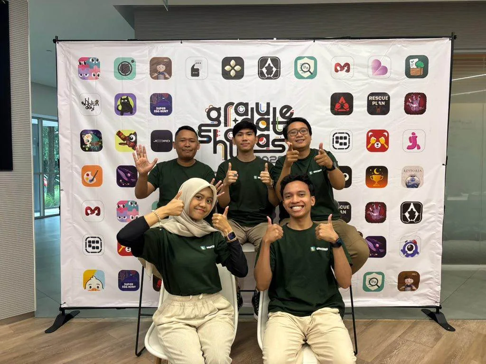
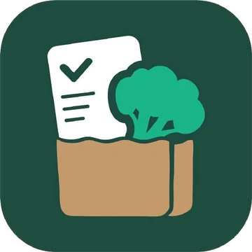
Broceries
A grocery list for people who still forget the milk. Write it like you would on paper, shop in the order of the aisles and never lose last week's list.
It started when she watched her mom prepare for every shopping trip and still forget things at home. Sasa observed and interviewed shoppers, then chose a dark green ground with high contrast text so adult and older eyes can read it easily.
- 7 in 10
- shoppers still forget items, even with a list in hand
- 5 in 10
- cannot remember what they missed the last time
- 6 in 10
- do not rely on grocery apps and go back to paper or phone notes
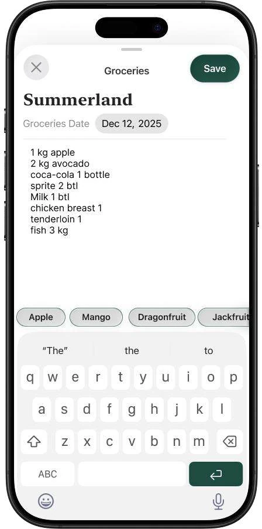
Write freely and get suggestions while you type
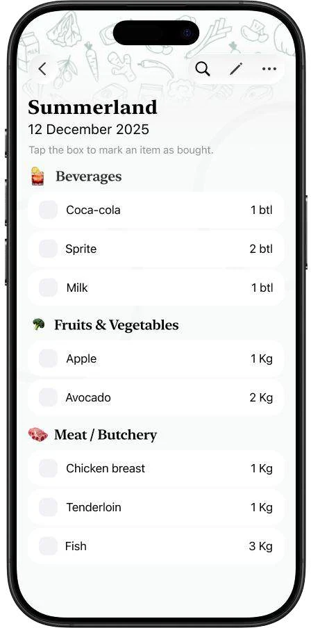
Saved lists come back sorted by supermarket section
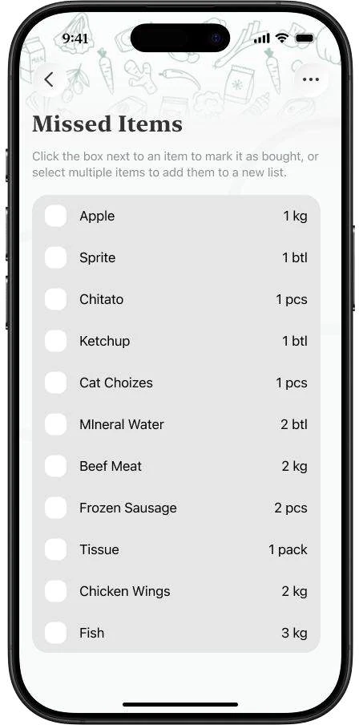
Anything left unchecked returns as a missed item
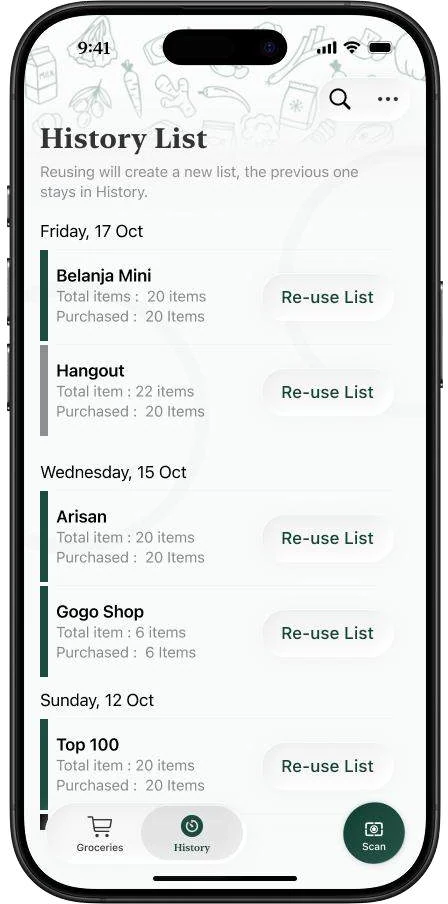
Every finished list is kept, one tap to reuse it
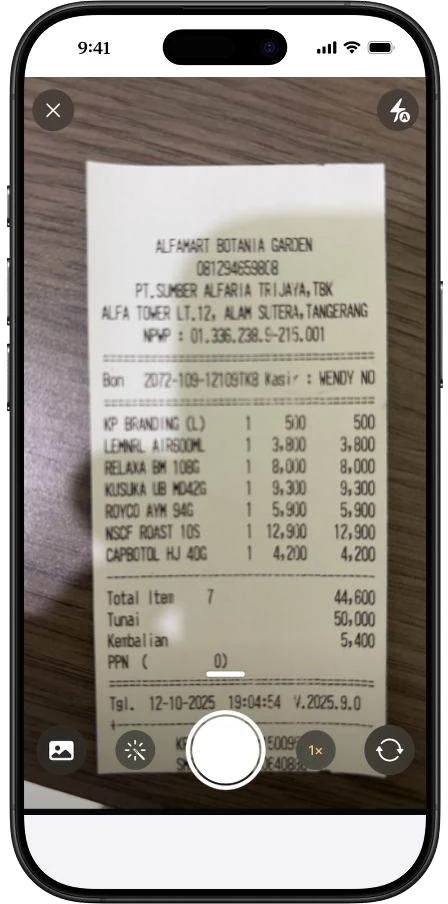
Scan a receipt or handwritten note into a list
More work
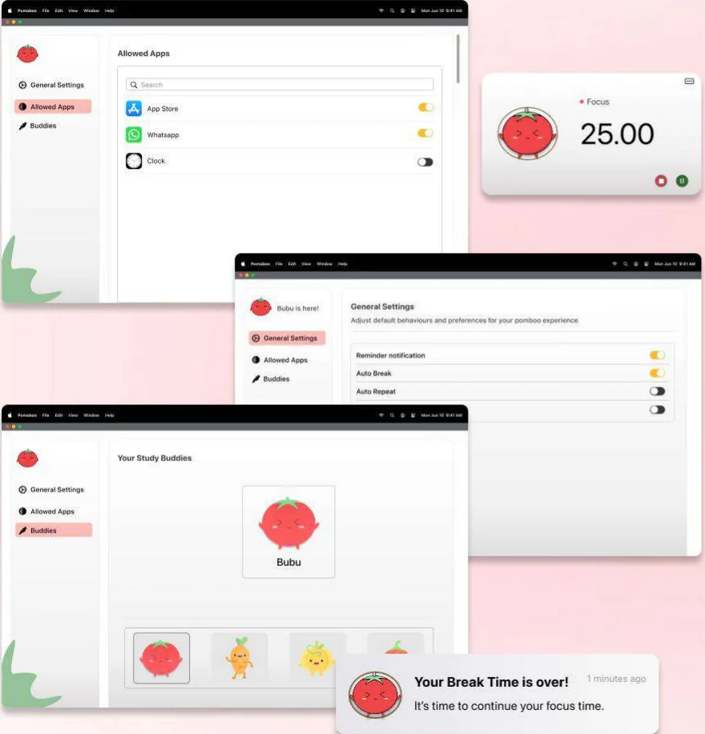
A Pomodoro timer with tomato study buddies. Sasa drew the characters, then adapted the app from iOS to macOS and redesigned it after usability testing.
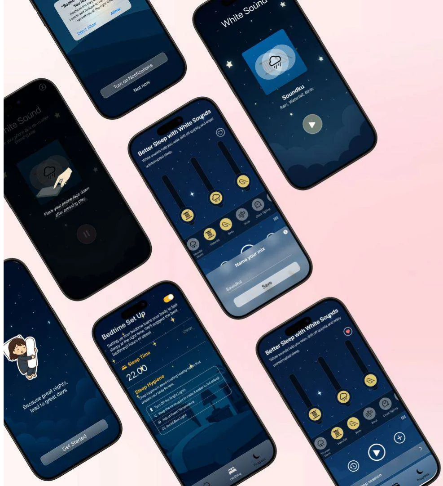
A sleep app with white sounds you can mix, bedtime reminders and streaks.
Every project here began with watching someone struggle with something small.
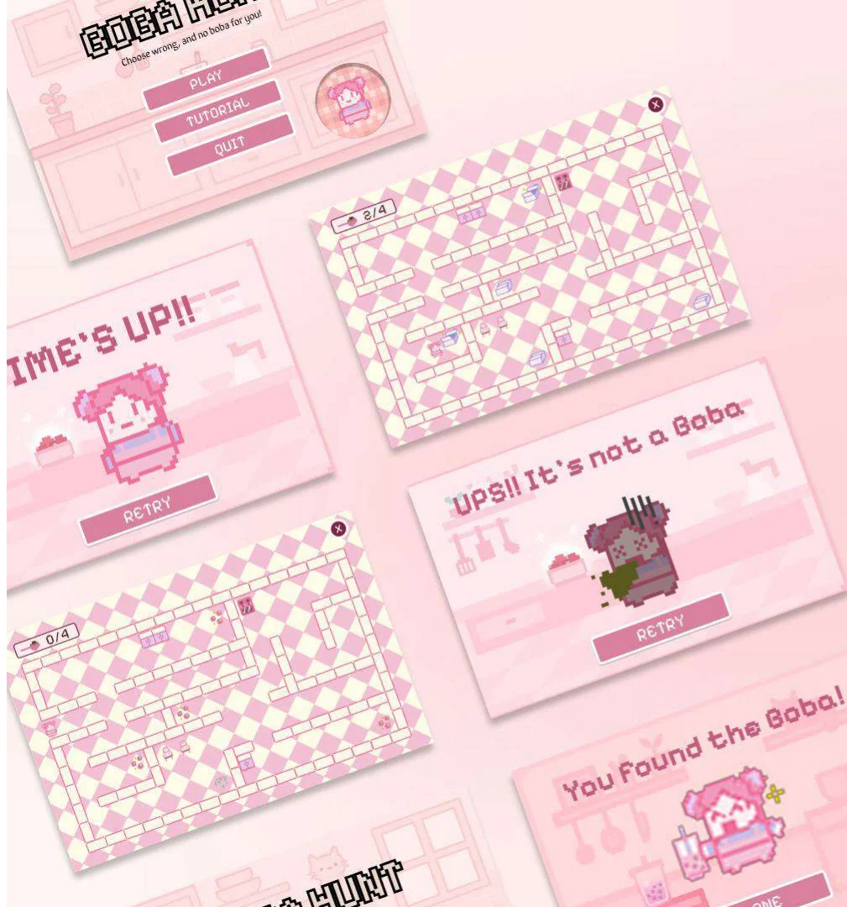
A memory and focus game: remember where the bobas were, find them before the timer ends and make the perfect drink.
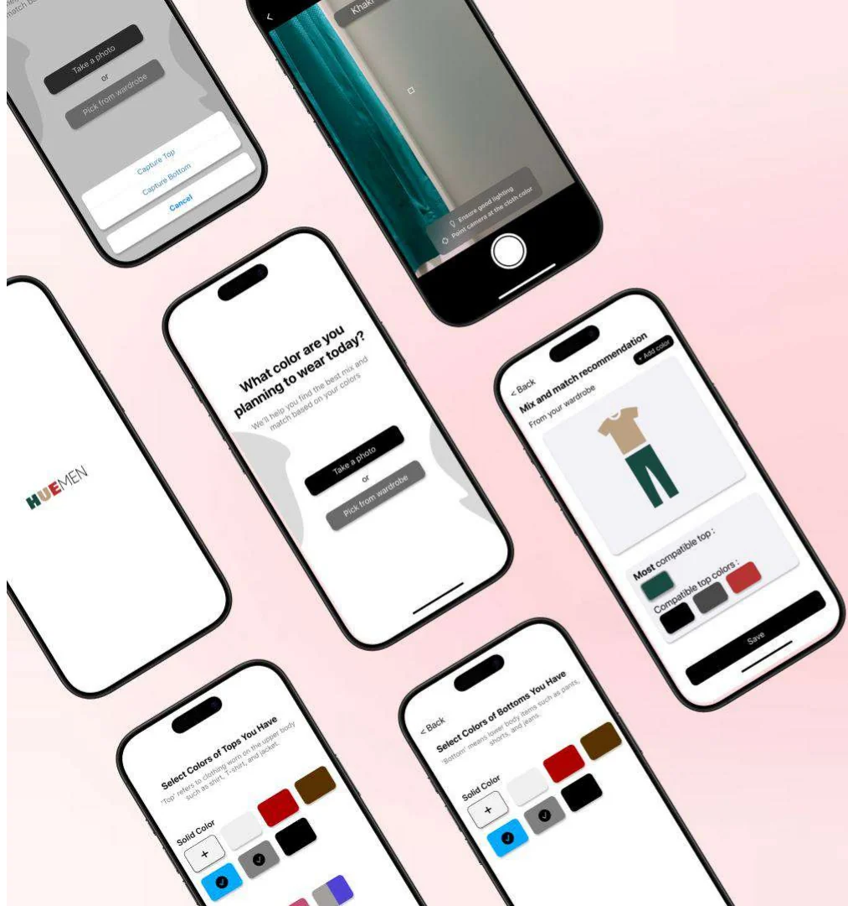
An outfit helper for men who struggle to match colors. Point the camera at a shirt and get top and bottom pairings based on color theory.
- Tangerang Selatan, Banten
- Fluent Indonesian, professional English, beginner Korean
- Say hello by email
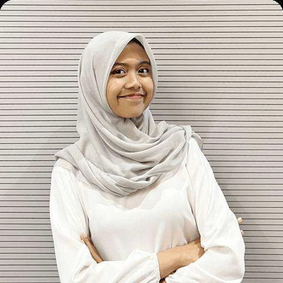
Sasa is Lutfiah Zahra Larosa, a UI/UX and visual designer who graduated in Industrial Engineering with honors, then taught herself Figma, Illustrator and Animate.These days she builds brand systems and websites as Assistant Manager for Marketing at LearnLink China, and coaches English speaking on Preply. She also hosts events as a master of ceremonies.
Drawn, printed, posted 20 pieces


Worked and studied with Apple Developer Academy, LearnLink China, Universitas Syiah Kuala, PT Pupuk Iskandar Muda, Universiti Teknologi Malaysia, Hellomotion Academy, Preply and King Sejong Institute.
- Tangerang Selatan, Banten
- lutfiahzahralarosa@gmail.com
- +62 813 2797 6827
- linkedin.com/in/sasa-larosa
- UI/UX portfolio, PDF
- Design portfolio, PDF
- Say hi